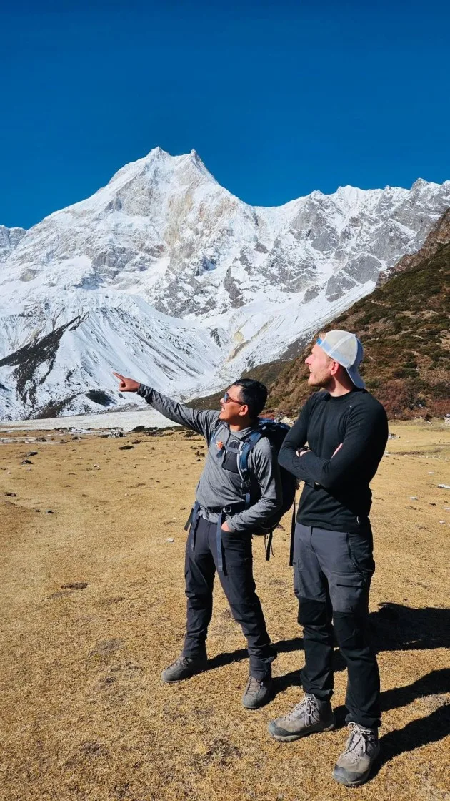
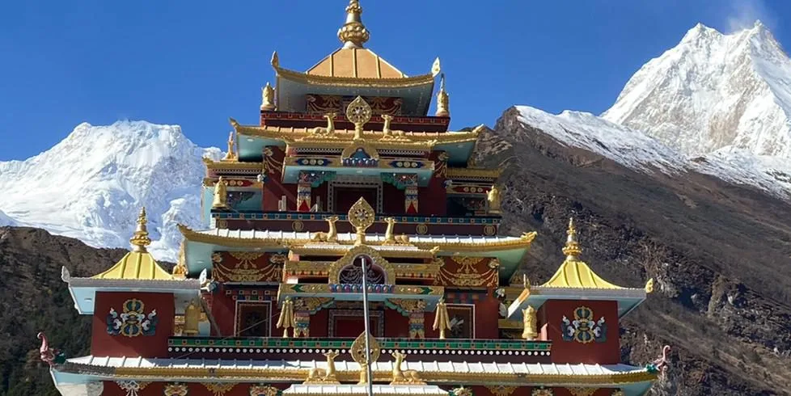
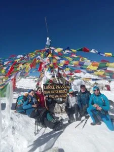

The Ultimate Himalayan Dilemma: Classic Circuit vs Remote Wilderness
For decades, the Annapurna Circuit held undisputed dominion as the king of Himalayan trekking circuits. However, as road construction pushed up the Marsyangdi and Kali Gandaki river valleys, seasoned adventurers began seeking an alternative that preserved the raw, untouched magic of Nepal's early trekking era. That answer emerged in the Manaslu Circuit.
Today, these two expeditions represent two divergent philosophies of mountain travel:
- The Annapurna Circuit: The pinnacle of comfort, high-alpine grandeur, and geographic variety. It is ideal for hikers who want breathtaking mountain panoramas, modern teahouse amenities (private rooms, hot showers, bakeries), flexible logistics, and the thrill of standing atop the 5,416-meter Thorong La Pass.
- The Manaslu Circuit: The benchmark for true off-the-beaten-path wilderness immersion. Encircling Mt. Manaslu (8,163m)—the 'Mountain of the Spirit'—this trek is strictly regulated under restricted area laws, keeping crowds to less than one-fifth of Annapurna's traffic while traversing suspension bridges suspended hundreds of feet over the roaring Budhi Gandaki river gorge.
The Quick Rule of Thumb: Choose the Annapurna Circuit if you prioritize higher passes, dramatic high-altitude plateau scenery, side trips to Tilicho Lake, and cozy teahouses with great food. Choose the Manaslu Circuit if your highest priority is complete wilderness solitude, zero roads, raw Gurung and Tibetan village authenticity, and an untouched trail environment.
Mountain Scenery & Landscape Diversity: Annapurna Massif vs Mt. Manaslu
Both treks offer mind-boggling mountain scenery, but the visual progression differs significantly:
On the Annapurna Circuit, the scenery opens into immense, wide-angle glacial amphitheatres once you reach Upper Pisang and Manang. You walk directly beneath the jagged wall of the Annapurna massif—Annapurna II (7,937m), Annapurna III (7,555m), Annapurna IV (7,525m), Gangapurna (7,455m), and the dramatic tilted rock slab of Paungda Danda. Crossing into Lower Mustang reveals a surreal, dry, wind-sculpted lunar desert that feels like Tibet.
On the Manaslu Circuit, the landscape feels more intimate, sheer, and claustrophobic in the lower stages. You hike for four days through a remarkably deep, vertical river canyon where waterfalls plunge hundreds of meters off cliff edges directly onto the path. When the valley suddenly opens at Lho and Samagaon, the double-crested summit pyramid of Manaslu (8,163m) towers directly above your teahouse window, so close you can hear the rumble of seracs calving off its hanging glaciers.
| Expedition Dimension | Classic Annapurna Circuit | Manaslu Circuit | Key Tactical Advantage |
|---|---|---|---|
| Primary Peak Focus | Annapurna I, II, III, IV, Gangapurna, Dhaulagiri | Mt. Manaslu (8,163m), Himalchuli, Ngadi Chuli | Annapurna offers more 7,000m+ peaks; Manaslu is more intimate. |
| Highest Pass Elevation | Thorong La Pass (5,416m / 17,769ft) | Larkya La Pass (5,106m / 16,752ft) | Thorong La is 310m higher and carries greater altitude challenge. |
| Trail Character | Wide singletrack + NATT trails + road bypasses | 100% wilderness footpaths & suspension bridges | Manaslu has zero vehicular road interaction on the main circuit. |
| Trail Traffic (Peak Season) | 300 - 450 trekkers / day | 40 - 70 trekkers / day | Manaslu offers 5x greater wilderness solitude. |
| Teahouse Standard | High; bakeries, pizza, attached bathrooms | Rustic to Moderate; cozy, simple rooms, shared toilets | Annapurna provides superior lodging comfort and culinary variety. |
| Permit Complexity | Standard ACAP & TIMS (No group minimum) | Restricted Area Permit (Minimum 2 trekkers + guide) | Annapurna is simpler to arrange; Manaslu requires group pairing. |

The Pass Showdown: Thorong La (5,416m) vs Larkya La (5,106m)
Crossing a high Himalayan pass is the physical and emotional zenith of both circuits. Comparing the two mountain passes reveals crucial differences in alpine challenge:
| Pass Parameter | Thorong La Pass (Annapurna) | Larkya La Pass (Manaslu) | Trekker Impact & Challenge |
|---|---|---|---|
| Apex Altitude | 5,416 meters (17,769 ft) | 5,106 meters (16,752 ft) | Thorong La is 310m higher; oxygen is ~5% thinner. |
| Summit Departure Point | Thorong Phedi (4,450m) or High Camp (4,880m) | Dharamsala / Larkya Phedi (4,460m) | Both require 4:00 AM headlamp departures in freezing cold. |
| Pass Day Elevation Gain | +966m (from Phedi) or +536m (from High Camp) | +646m | Larkya La ascent is a longer, more gradual glacial moraine traverse. |
| Pass Day Descent | -1,616m to Muktinath (steep scree) | -1,516m to Bimthang (glacial moraine & ice) | Both descents severely punish knees; trekking poles strictly mandatory. |
| Terrain Underfoot | Compact scree path; snow in early/late season | Lateral glacial moraine, loose boulders, frozen snowfields | Larkya La is more rugged and uneven underfoot; microspikes vital. |
While Thorong La is higher in elevation, many mountain guides consider Larkya La more physically exhausting because the approach traverses undulating, unstable lateral moraines of the Larkya Glacier where foot placement requires constant vigilance.

Trail Crowds & Atmosphere: Bustling Hubs vs Untouched Wilderness
The social atmosphere is perhaps the most glaring contrast between the two treks:
- Annapurna Circuit Social Energy: During October and April, Annapurna teahouse dining rooms are buzzing international hubs. You will share tables with trail runners from France, photographers from Germany, and backpackers from Australia. If you enjoy exchanging travel stories, making new hiking companions, and watching mountain documentaries in Manang bakeries, Annapurna offers unmatched social warmth.
- Manaslu Circuit Zen Solitude: Manaslu receives fewer than 15% of Annapurna's annual trekker volume. On the trail, you will walk for hours without encountering another hiking party. Teahouses in villages like Namrung, Lho, and Samdo have only 10 to 20 rooms, creating an intimate, quiet, and deeply meditative connection with the Himalayas.

Road Encroachment: Modern NATT Trails vs Roadless Manaslu Footpaths
No comparison is honest without addressing road construction:
The Annapurna Circuit has dirt motor roads along its lower eastern valley (Besisahar to Manang) and lower western valley (Muktinath to Pokhara). While modern itineraries utilize the NATT trails on the opposite side of the river to avoid road walking, you will occasionally hear vehicle sounds in the distance or cross dirt roads when entering major villages like Chame.
The Manaslu Circuit, by contrast, remains almost entirely free of vehicular roads along its primary walking corridor. After stepping off your jeep at Machha Khola or Jagat, you enter a pristine wilderness trail where every single supply—from solar batteries to sacks of rice—is transported on the backs of mules or human porters. The absence of engine noise creates an authentic expedition atmosphere that has vanished from many popular trekking corridors.
Cultural Encounters: Hindu-Buddhist Fusion vs Authentic Tibetan Tsum-Nubri Culture
Culturally, both circuits present deep ethnological tapestries:
- Annapurna Cultural Progression: Begins with Hindu Gurung and Magar agrarian villages in Lamjung, transitions into the Tibetan-Buddhist traditions of the Manangis in the upper valley, and concludes at the sacred Hindu-Buddhist temple pilgrimage site of Muktinath and the Thakali trading towns of Mustang. It is a brilliant showcase of Nepal's harmonious religious syncretism.
- Manaslu's Ancient Nubri & Tsum Culture: The upper Manaslu region (known historically as Nubri) is inhabited by ethnically Tibetan communities who have maintained uninterrupted spiritual traditions for over eight centuries. The dialect, dress, architectural stonework, and ancient gompas (such as Ribung Gompa in Lho and Pungyen Gompa) reflect an ancient Tibetan lifestyle largely lost in modern Tibet.

Accommodation & Gastronomy: German Bakeries vs Rustic Homestays
If daily creature comforts are essential to your holiday enjoyment, this is a major decision factor:
- Annapurna Teahouse Luxury: Annapurna teahouses are the most sophisticated in Nepal outside of luxury Khumbu lodges. You will find rooms with private attached western bathrooms, reliable solar hot showers, 4G cellular data coverage up to Manang, and menus featuring espresso, apple crumbles, pizzas, lasagna, and pancakes alongside authentic Dal Bhat.
- Manaslu Teahouse Simplicity: While Manaslu's teahouse infrastructure has improved substantially in recent years, it remains rustic. Bedrooms are basic twin-share wooden cubicles with foam pads. Most bathrooms are shared squat facilities outside the main building. Menus focus heavily on hearty local staples: Dal Bhat, fried potatoes, noodle soups (thukpa), and Tibetan tsampa porridge.
Epic Side Trips: Tilicho Lake & Ice Lake vs Tsum Valley & Manaslu Base Camp
Both circuits feature world-class side excursions that can extend your trek into an epic multi-week odyssey:
- Annapurna Side Trips: The 3-day detour to Tilicho Lake (4,919m)—one of the highest glacial lakes in the world nestled beneath the Great Barrier—is an alpine masterpiece. Other spectacular day-hikes include Ice Lake (Kicho Tal at 4,600m) above Braga and the sacred cave of Milarepa.
- Manaslu Side Trips: Adding the sacred Tsum Valley (The Valley of Happiness) adds 5 to 6 days to your trek, taking you into a sacred non-violent hidden valley where century-old nunneries and Milarepa's meditation cave reside. Alternatively, a day-hike to Manaslu Base Camp (4,400m) and Birendra Tal glacial lake from Samagaon offers front-row views of active icefalls.

Permits & Regulations: Open ACAP vs Restricted Area Mandates
Bureaucracy and legal requirements represent a fundamental operational difference:
| Regulatory Requirement | Annapurna Circuit | Manaslu Circuit |
|---|---|---|
| Permits Required | ACAP Permit (NPR 3,000) + TIMS Card (NPR 2,000) | Manaslu Restricted Area Permit (MRAP) + MCAP + ACAP |
| Permit Cost | ~$38 USD total per trekker | ~$140 - $180 USD total per trekker (seasonal) |
| Solo Trekking Allowed? | Guide required by NTB; solo hiker can hire 1 guide | Strictly Prohibited: Minimum 2 foreign trekkers required |
| Certified Agency Mandate | Permits can be arranged through agency | Mandatory: Permits ONLY issued through registered Nepal agency |
The Manaslu 2-Trekker Rule: Because Manaslu borders Tibet, the Nepal Department of Immigration legally enforces a strict minimum of two foreign trekkers traveling together with a licensed Nepali guide. Solo independent travelers cannot obtain a Manaslu permit alone; our agency pairs solo travelers to meet the legal quota.
Physical Difficulty & Fitness: Which Trek Pushes You Harder?
Both treks require excellent cardiovascular conditioning, but they challenge your body in different ways:
- Thorong La Altitude Strain: At 5,416m, Thorong La is 310 meters higher than Larkya La. The altitude stress on your lungs and brain is measurably greater. Trekkers prone to Acute Mountain Sickness must be exceptionally cautious during the ascent to High Camp and the pass.
- Manaslu Trail Ruggedness & Remoteness: While Larkya La is slightly lower (5,106m), the Manaslu Circuit is physically more demanding over its entire duration. The trail includes rocky scrambles over landslide zones, narrow cliffside paths, and extensive daily walking through remote terrain where medical facilities are non-existent. Emergency helicopter evacuation is also more complicated in the deep gorges of Manaslu.

Best Seasons & Weather Windows: Autumn Stability vs Spring Thaw
Both treks share the classic Himalayan dual-peak trekking seasons, but climatic nuances apply:
- Autumn (October & November): The golden season for both circuits. Post-monsoon atmospheric clarity delivers brilliant blue skies, crisp mountain views, dry trails, and stable pass conditions. Autumn is the premier time to cross both Thorong La and Larkya La.
- Spring (March, April & May): Warmer temperatures and blooming rhododendrons in lower valleys. However, early March can see heavy residual winter snow on both Thorong La and Larkya La, requiring microspikes and careful monitoring of pass conditions.
- Winter (December - February): Thorong La is occasionally passable in early winter with cold-weather gear, but heavy blizzards frequently shut down Larkya La, with teahouses at Dharamsala closing completely from late December to mid-February.
Total Budget Comparison: Permitted Agency Packages vs Flexible Costs
Because of restricted area permit fees and logistical requirements, the Manaslu Circuit is noticeably more expensive than the Annapurna Circuit:
| Expense Category | Annapurna Circuit (14 Days) | Manaslu Circuit (14 Days) | Cost Variance Rationale |
|---|---|---|---|
| Official Government Permits | ~$38 USD (ACAP + TIMS) | ~$150 - $185 USD (MRAP + MCAP + ACAP) | Manaslu includes expensive Restricted Area fee. |
| Round-Trip 4WD Jeep Transport | ~$140 - $180 total per vehicle | ~$220 - $280 total per vehicle | Manaslu road to Machha Khola is rougher and longer. |
| Daily Teahouse Food & Lodging | $28 - $36 / day | $30 - $40 / day | High-altitude supplies carried on mules cost slightly more in Manaslu. |
| Licensed Guide Fee | $28 - $36 / day | $32 - $40 / day | Restricted area guides require specialized licensing. |
| Estimated Total Package Cost | $850 - $1,250 USD | $1,150 - $1,650 USD | Manaslu costs roughly 25% to 35% more overall. |
Standard Itineraries: 12-14 Day Annapurna vs 14-16 Day Manaslu
Time availability plays an important role in your decision:
- Annapurna Circuit (12 to 14 Days): Highly flexible. Because road connections exist at Dharapani, Chame, and Jomsom, trekkers can easily compress or extend the trek to match their flight schedules. You can finish at Muktinath and fly back from Jomsom to Pokhara in just 20 minutes.
- Manaslu Circuit (14 to 16 Days): Fixed and uncompromising. The circuit must be completed in its entirety from Machha Khola to Dharapani; there are no mid-route roads or airstrips for early exit. Adding Tsum Valley requires a minimum of 18 to 21 days total.

Which Trek Should You Choose? Decision Matrix & Final Recommendation
To finalize your decision, assess your personal travel priorities against this definitive checklist:
Choose the Annapurna Circuit if:
- You want to conquer the higher pass: Thorong La (5,416m).
- You dream of seeing the turquoise waters of Tilicho Lake (4,919m).
- You appreciate creature comforts: espresso, fresh pastries, attached bathrooms, and WiFi.
- You are traveling solo and don't want to find a trekking partner for permits.
- You want the convenience of flying out from Jomsom directly to Pokhara.
Choose the Manaslu Circuit if:
- You want an authentic, crowd-free wilderness expedition with zero road walking.
- You want to experience raw, uncommercialized Tibetan-Buddhist mountain culture.
- You are drawn to the dramatic grandeur of Mt. Manaslu (8,163m) towering above your teahouse.
- You are traveling with a partner or willing to be paired with another hiker for restricted permits.
- You want the nostalgic feeling of trekking in the Nepal Himalaya thirty years ago.
Whichever circuit you choose, you are embarking on one of the greatest alpine adventures on Earth. Partner with Igloo Himalaya Treks for expert guiding, flawless permit processing, and an unforgettable journey through the roof of the world.

Ready to Experience the Himalayas?
Whether you are preparing for high-altitude trekking, cultural circuits, or alpine summit expeditions, start planning a bespoke journey tailored to your fitness, travel season, and style.